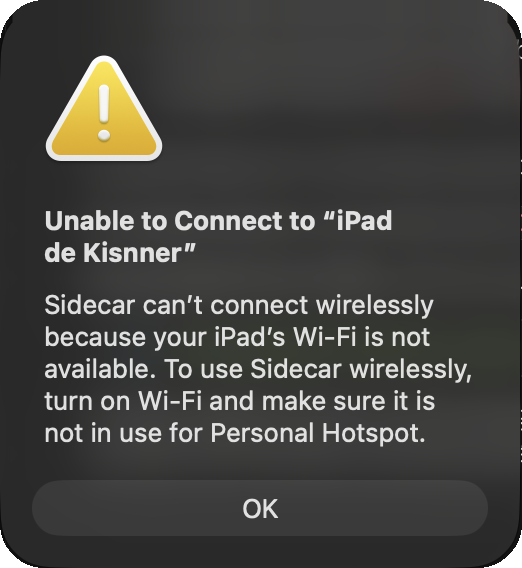
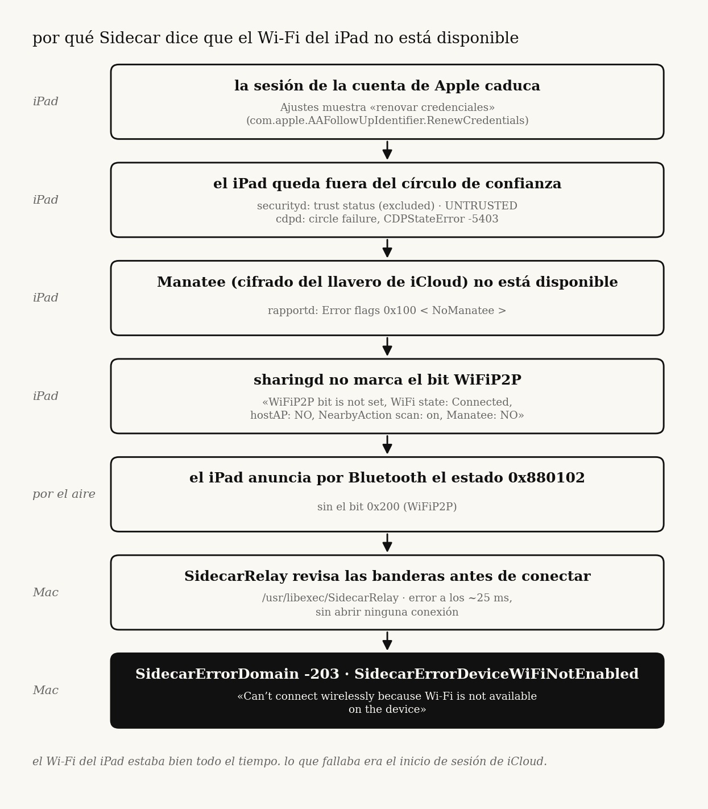
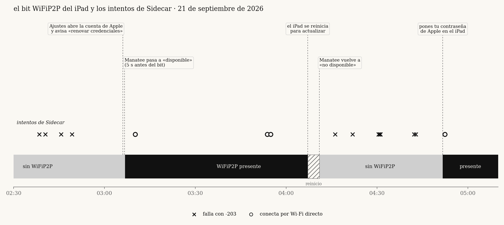

sidecar decía que el wi-fi de mi ipad estaba apagado. era icloud.

cómo rastreé SidecarErrorDomain -203 en macos 27 desde un diálogo engañoso hasta un solo bit de bluetooth, y de ese bit al estado de confianza del llavero de icloud del ipad. sin parches, sin tocar sip, sin modificar procesos de apple: solo logs, un framework privado leído desde una pequeña sonda y mucha medición.
resumen
- el diálogo culpa al wi-fi. el wi-fi estuvo bien todo el tiempo.
- el mac decide en 25 ms, en local, según un bit de estado que el ipad anuncia por bluetooth:
0x200(WiFiP2P). sin bit, no hay sidecar inalámbrico. - el ipad registra por qué retiene ese bit, cada ~100 ms:
Manatee: NO. - manatee (el cifrado de extremo a extremo del llavero de icloud) estaba caído porque la cuenta de apple del ipad había salido del círculo de confianza (
RenewCredentialspendiente en ajustes). - completar el aviso de la cuenta de apple en el ipad devolvió manatee, el bit volvió 5 s después y sidecar conectó.


entorno
| mac | MacBookPro17,1 (m1, 2020), macos 27.0 26A5425a, luego 27.2 beta 1 26B5086k |
| ipad | iPad13,10 (ipad pro de 12,9", 5.ª gen), ipados 27.0 24A435, luego 27.2 24B5084k |
| red | el mismo wi-fi de casa, mac en 5 ghz canal 44 todo el tiempo |
| cable usb | sidecar siempre funcionó |
el problema apareció el 6 de septiembre con macos 27.0. pasé dos días en el lado del mac, restablecí los ajustes de red del ipad (empeoró: el cable también dejó de funcionar hasta reconstruir la confianza) y me rendí. volví el 21 de septiembre con otro enfoque: dejar de adivinar, construir una sonda y medir.
1. el error nunca toca la red
el log del mac en un intento fallido:
SidecarRelay: Connecting to IDS <ipad> 'com.apple.sidecar.display'
SidecarRelay: Open Session Failed: SidecarErrorDomain (-203)
SidecarDisplayAgent: Encountered unrecoverable error: SidecarErrorDomain Code=-203 "SidecarErrorDeviceWiFiNotEnabled"
25 ms entre la primera y la segunda línea. no se puede abrir una sesión de red y fallarla en 25 ms: es una comprobación local.
el error viene de /usr/libexec/SidecarRelay (swift, arm64e). en la build 26B5086k una sola instrucción carga el código: mov x2, #-0xcb en 0x100046908. se llega por tbz w22, #0x0, 0x100046900, desde un bloque que enmascara las banderas del dispositivo (and + cmp/ccmp) y, cuando no coinciden, llama a String.hasPrefix para elegir entre dos errores. el binario también trae las cadenas RapportStatusFlags, WiFiP2P, WiFiOff, WiFiHostAP, iWiFi, ForceAWDL y ForceUSB.
no decodifiqué del todo qué significa cada máscara. lo que puedo decir del desensamblado es que la decisión es una comprobación de banderas. cuál importa lo salió de medir, abajo.
2. medir la bandera
SidecarCore es un framework privado. su SidecarDisplayManager expone sharedManager, devices, connectToDevice:withConfig:completion: y una propiedad status en cada SidecarDevice. esa propiedad es la máscara de estado de rapport que el ipad anuncia por bluetooth. el mismo número aparece en sharingd como SF 0x… y en SidecarRelay como Device Changed <…>.
escribí sidecar-probe, una pequeña herramienta en swift que carga el framework, lee esa propiedad, la imprime una vez por segundo y puede disparar la misma llamada de conexión que usa el menú de pantallas. eso convirtió "sidecar está roto" en algo que podía observar:
status | banderas | sidecar inalámbrico |
|---|---|---|
0x880102 | BLE DuetSync Owner ApplePay | falla, -203 |
0x880302 | BLE DuetSync WiFiP2P Owner ApplePay | conecta |
un solo bit: 0x200, WiFiP2P. por usb el ipad anuncia iWiFi … USB y el bit no hace falta, por eso el cable siempre funcionó.
esto también explica un detalle confuso: universal control abría conexiones awdl (apple wireless direct link) con el mismo ipad mientras sidecar se negaba. rapportd levanta awdl bajo demanda con eventos NeedsAWDL e ignora dispositivos "que no tienen las banderas esperadas". universal control pasa por una ruta forzada (ForceAWDL). sidecar no.
así que la pregunta pasó de "por qué sidecar está roto" a "por qué el ipad no anuncia WiFiP2P".
3. el bit apareció solo
con la sonda corriendo, a las 03:06:45 el ipad pasó de BLE DuetSync Owner ApplePay a BLE DuetSync WiFiP2P Owner ApplePay … MultiUserDevice. sidecar conectó a las 03:10. a las 04:07 el ipad se reinició para instalar una actualización, el bit desapareció otra vez y sidecar volvió a -203.
eso me dio una ventana con el bit y otra sin él. cada conexión exitosa cayó dentro de la ventana con el bit, y cada fallo fuera de ella.


quien usa el ipad recordó que hacia las 03:06 una alerta de icloud pidió el código del ipad y luego el del iphone. esa fue la primera pista real.
4. el ipad dice por qué
el mac solo ve el resultado. el ipad conoce la razón, así que saqué sus logs por cable:
sudo log collect --device-udid <UDID> --last 10h --output /tmp/ipad.logarchive1,1 gb. en sharingd (SDNearbyAgentCore), cada ~100 ms:
WiFiP2P bit is not set, WiFi state: Connected, hostAP: NO, NearbyAction scan: on, Manatee: NO
el ipad decide con cuatro entradas: estado del wi-fi, si es un punto de acceso, si el escaneo de nearby action está activo y si manatee está disponible. tres estuvieron bien toda la noche. lo único negativo fue Manatee: NO.
| periodo | WiFi state | hostAP | scan | Manatee | bit |
|---|---|---|---|---|---|
| horas antes de las 03:06 | Connected | NO | on | NO | no |
| 03:06:45 a 04:07 | Connected | NO | on | disponible | sí |
| tras el reinicio | Connected | NO | on | NO | no |
esta línea también descartó, desde el punto de vista del propio ipad, dos cosas en las que perdí días: el wi-fi (Connected) y el punto de acceso personal (hostAP: NO).
5. por qué manatee estaba caído
manatee es la capa de cifrado de extremo a extremo del llavero de icloud y otros datos protegidos. depende de que el dispositivo sea de confianza en el círculo de confianza octagon de la cuenta. los logs del ipad mostraron toda la cadena:
cdpd/CDPManateeStateController:Manatee not available due to circle failure with error: CDPStateError Code=-5403securityd:trust status: (excluded),updated account trust state: UNTRUSTED, desde las 23:00, la primera línea capturadarapportd: bandera de error0x100 < NoManatee >- ajustes: seguimiento
com.apple.AAFollowUpIdentifier.RenewCredentialspendiente cada vez que ajustes leía su lista (00:22, 00:25, 02:14, 02:15). abrir ajustes no lo quitaba.
y el momento en que se arregló, al milisegundo:
03:06:37 securityd new syncing policy (views include Manatee)
03:06:40 securityd updated account trust state: TRUSTED (.134)
03:06:40 sharingd Manatee is available (.119)
03:06:40 rapportd Error flags changed: 0x100 < NoManatee > -> 0x0
03:06:45 mac ipad starts advertising WiFiP2P
03:06:52 settings RenewCredentials no longer pending
6. reproducirlo
una correlación de un solo evento es una historia. quería que la cadena se rompiera y se curara otra vez.
- 04:07, el ipad se reinicia por la actualización. 04:10:37 la confianza vuelve a
UNTRUSTED, 04:10:38 manatee a no disponible, 04:10:57 el bit desaparece. sidecar falla.RenewCredentialsvuelve a ajustes a las 04:17. - ~04:51, se introduce la contraseña de la cuenta de apple en el ipad. 04:51:42 vuelve el bit. 04:52:22 sidecar conecta por wi-fi directo (
[AWDL]).
callejones sin salida
cada uno se probó y el fallo continuó. lo que mató cada hipótesis fue una medición, no un argumento.
| hipótesis | por qué es falsa |
|---|---|
| wi-fi, bluetooth o awdl caídos en el mac | wi-fi en 5 ghz, bluetooth encendido, awdl0 arriba; el mac lee WiFiP2P de otro dispositivo; universal control abre awdl con este mismo ipad |
| punto de acceso personal en el ipad | el ipad registra hostAP: NO en cada línea |
| vpn | apagada en ambos, sin cambio |
| 2,4 vs 5 ghz | ipad en 5 ghz, mismo ssid que el mac: bit ausente en 75 de 75 lecturas de un segundo |
| versiones distintas del sistema | conectó con ipad 27.0 y mac 27.2; falló con ambos en 27.2 |
| cargador | conectó con el ipad desenchufado; falló enchufado durante más de 20 min |
| estado viejo en el mac | reinicié rapportd, sharingd, SidecarRelay, identityservicesd: vuelve el mismo 0x880102 en vivo desde el ipad |
| restablecer los ajustes de red del ipad | empeoró |
| reiniciar el ipad | no lo arregla; la cuenta vuelve a pedir credenciales y el bit se pierde |
el arreglo
en el ipad:
- ajustes → tu nombre. si pide actualizar los ajustes de la cuenta de apple o volver a iniciar sesión, termínalo (contraseña, código de verificación, códigos de los dispositivos si los pide).
- icloud → contraseñas y llavero debe estar activado.
- si no basta, cierra sesión de la cuenta de apple y vuelve a iniciarla.
para confirmar: ./sidecar-probe status debe reportar WiFiP2P presente y salir con 0, y ./sidecar-probe connect debe conectar.
lo que no sé
- por qué la cuenta estaba en
RenewCredentialsdesde el principio. ya estaba así en la primera hora de logs capturados. - por qué un reinicio lo deshizo una vez. tras el segundo arreglo (con la contraseña) el bit se quedó.
- si otras entradas pueden quitar
WiFiP2Pde la misma forma. solo manatee cambió mientras todo lo demás era constante, así que solo manatee está probado. - qué tan general es. un mac y un ipad. no he visto otros modelos.
- no capturé los logs del ipad a las 04:51. ese momento solo está observado desde el mac y por lo que contó quien usa el ipad.
- no reinicié el ipad después del arreglo final para ver si aguanta.
lo que me llevo
- el mensaje de error es genérico. el diálogo
-203sale por cualquier motivo por el que falle la comprobación. aquí me mandó dos días a los ajustes de wi-fi y de punto de acceso. - encuentra dónde se toma la decisión y mide su entrada. una vez que supe que era una comprobación local de banderas, una sonda que leía la bandera cada segundo sirvió más que cualquier cantidad de reinicios.
- el otro dispositivo suele saberlo. el ipad registraba la razón exacta diez veces por segundo. el mac no tenía forma de verla.
- anota los callejones sin salida con la medición que los mató. varias de mis explicaciones intermedias eran falsas. la tabla es lo que me impidió volver a ellas.
apple podría arreglarlo con poco: cuando el ipad retiene WiFiP2P por NoManatee, el diálogo podría decir "inicia sesión en icloud en tu ipad" en lugar de "activa el wi-fi".
archivos
tools/sidecar-probe.swift: leeSidecarDevice.status, lo vigila y conecta sin la interfaz (api privada, solo para diagnóstico)tools/ipad-why.sh: extrae las líneas relevantes de un archivo de logs del ipad y enmascara datos personalesevidence/: extractos de logs enmascarados de ambos dispositivosnotes/: notas originales de la investigación (en español)
los datos personales (correo de la cuenta, identificadores de cuenta, udid, direcciones) están enmascarados en cada extracto. los logs sin procesar no se publican.